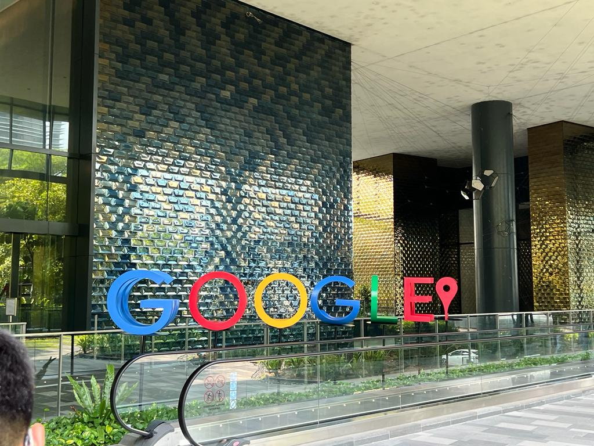
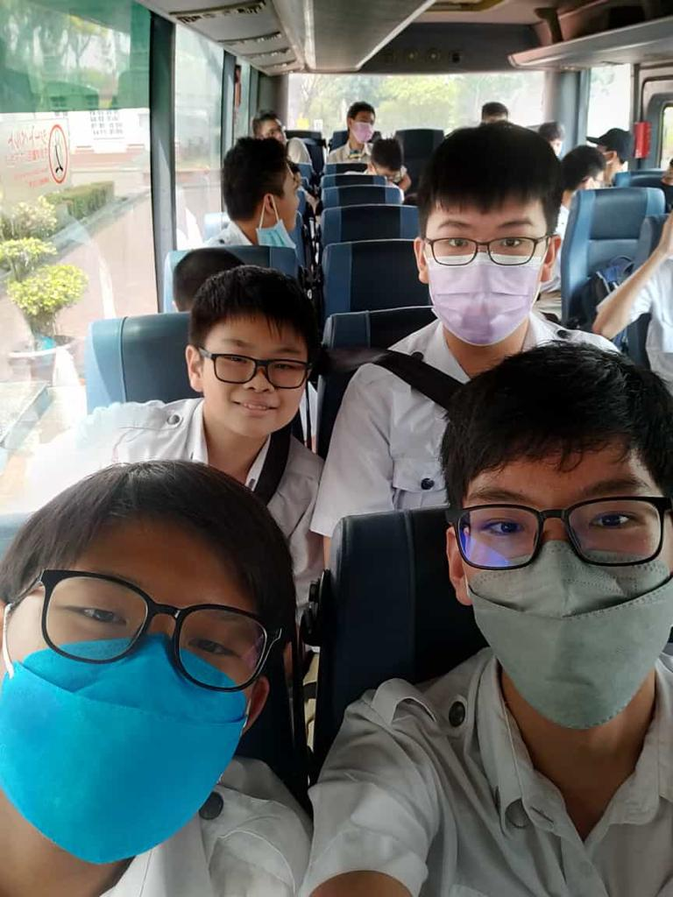

Outing To Google Singapore
This is one of my most memorable outings as I was able to learn about how Google operated and the many different facilities that it had such as...
- Makerspace where there were 3D printers and wood cutters
- Break Rooms and Pantries
- Even rooms where people could sleep or take a nap
It was very fascinating for me to see the layout of Google, a company that I someday may plan to work for and we also had a chance to ask the employees there certain coding questions. It was interesting to hear tips about programming from professionals and the experience was truly eye-opening for me.
What I have gained from my CCA
The Friends We Made Along The Way
During the time I have spent in my CCA, I have made a few friends and bonded with my CCA mates. This year in particular, a student transferred from Scouts CCA to EC3 named Bang Zhen and we have managed to bond through our supportive nature and programming experience. Overall, I enjoy expanding my social circle to include my CCA and I have been able to work with a few friends shown in the photo very well, having fun along the way.
The Skills
From my CCA, I have learnt how to self-improve and independently work towards my own goals without guidance. I have equipped the skill of being able to learn certain skills in web development by myself through research and testing out code and this is especially important for when I want to create something that uses a new skill one has not acquired yet. In conclusion, being independent and learning to constantly grow is a skill that I have understood.
The Values
Through my CCA, I have learnt how to persevere and work hard. One cannot finish a coding project in 1 day and it requires much time to be able to complete. Hence, by creating certain coding projects, I have been able to understand how to put in the effort and spend long hours working on it.